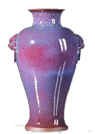

|
越窑 该名称最早见于唐人陆龟蒙的《秘色越器》一诗，系对杭州湾南岸古越地青瓷窑场的总称。其形成于汉代，经三国、西晋，至晚唐五代达到全盛期，至北宋中叶衰落。中心产地位于上虞曹娥江中游地区，始终以生产青瓷 主，质量上乘。陆羽《茶经·四之器》中评述茶碗的质量时写道："若邢瓷类银，越瓷类玉，邢不如越 ；邢瓷类雪，则越瓷类冰，邢不如越二也；邢瓷白而茶色丹，越瓷青而茶色绿，邢不如越三也。"陆羽煮饮绿茶，故极推崇越瓷。 |
邢窑 在今河北内丘、临城一带，唐代属邢州，故名。该窑始于隋代，盛于唐代，主产白瓷，质地细腻，釉色洁白，曾被纳为御用瓷器，一时与越窑青瓷齐名，世称"南青北白"。陆羽在《茶经》中认为邢不如越，主要因为他饮用蒸青饼茶，若改用红花比较，或要反映真实的茶汤色泽，则结果正好相反，所以两者各有所长，关键在于与茶性是否相配。 |
|
汝窑 宋代五大名窑之一，在今河南宝丰清凉寺一带，因北宋属汝州而得名。北宋晚期为宫廷烧制青瓷，是古代第一个官窑，又称北宋官窑。釉色以天青为主，用石灰一碱釉烧制技术，釉面多开片，胎呈灰黑色，胎骨较薄。 |
|
|  | 钧窑 宋代五大名窑之一，在今河南宝丰清凉寺一带，因北宋属汝州而得名。北宋晚期为宫廷烧制青瓷，是古代第一个官窑，又称北宋官窑。釉色以天青为主，用石灰一碱釉烧制技术，釉面多开片，胎呈灰黑色，胎骨较薄。 |
定窑 宋代五大名窑之一。在今河北曲阳润磁村和燕山村，因唐宋时属定州而得名。唐代已烧制白瓷，五代有较大发展，白瓷釉层略显绿色，流釉如泪痕。北宋后期创覆烧法，碗盘器物口沿无釉，称为"芒口"。五代、北宋时期承烧部分宫廷用瓷，器物底部有"官"、"新官"铭文。宋代除烧白瓷外，还烧黑釉、酱釉和绿釉等品种。 |
|
南宋官窑 宋代五大名窑之一，宋室南迁后设立的专烧宫廷用瓷的窑场。前期设在龙泉（今浙江龙泉大窑、金村、溪口一带），后期设在临安郊坛下（今浙江杭州南郊乌龟山麓）。两窑烧制的器物胎、釉特征非常一致，难分彼此，均为薄胎，呈黑、灰等色；釉层丰厚，有粉青、米黄、青灰等色；釉面开片，器物口沿和底足露胎，有"紫口铁足"之称。16世纪末，龙泉青瓷在法国出现，轰动整个法兰西，由于一时找不到合适的语言称呼它，只得用欧洲名剧《牧羊女》中女主角雪拉同所披的青色长袍来比喻，于是"雪拉同"成为青瓷的代名词。现在龙泉窑又有新的发展。杭州南宋官窑遗址建立了南宋官窑博物馆。 |
|
哥窑 宋代五大名窑之一，至今遗址尚未找到。有的文献上将浙江龙泉官窑称为哥窑，实为讹传。传世的哥窑瓷器，胎有黑、深灰、浅灰、土黄等色，釉以灰青色为主，也有米黄、乳白等色，由于釉中存在大量气泡、未熔石英颗粒与钙长石结晶，所以乳浊感较强。釉面有大小纹开片，细纹色黄，粗纹黑褐色，俗称"金丝铁线"。从瓷器的釉色、纹片、造型来看，均不同于宋代龙泉官窑。 |
|
建窑 宋代五大名窑之一，至今遗址尚未找到。有的文献上将浙江龙泉官窑称为哥窑，实为讹传。传世的哥窑瓷器，胎有黑、深灰、浅灰、土黄等色，釉以灰青色为主，也有米黄、乳白等色，由于釉中存在大量气泡、未熔石英颗粒与钙长石结晶，所以乳浊感较强。釉面有大小纹开片，细纹色黄，粗纹黑褐色，俗称"金丝铁线"。从瓷器的釉色、纹片、造型来看，均不同于宋代龙泉官窑。 |
|
景德镇窑 在今江西景德镇。始烧于唐武德年间，产品有青瓷与白瓷两种，青瓷色发灰，白瓷色纯正，素有"白如玉、薄如纸、明如镜、声如磐"之誉。它在宋代主要烧制青白瓷。元代为宫廷烧制青白瓷，上有"枢府"字样，还烧制青花、釉里红等品种。至明代它成为全国瓷器烧制中心，设立了专为宫廷茶礼烧制茶具的工场。这时青花瓷有很大发展，茶具传到日本，日本茶道之祖村田珠光十分喜爱，称之"珠光青瓷"。此时，釉上彩、斗彩、素三彩、五彩等品种相继出现，还烧造了多种名贵蓝、红釉、甜白釉瓷器。清代时它又创制珐琅彩、粉彩等多种新品种。自宋代开始，景德镇瓷器就远销日本，明清时大量输入欧洲，同时也奠定了"景瓷宜陶"的瓷都地位。 |
|
宜兴窑 在今江苏宜兴鼎蜀镇。早在汉晋时期，就始烧青瓷，产品造型的纹饰均受越窑影响，胎质较疏松，釉色青中泛黄，常见剥釉现象。于宋代开始改烧陶器，及明代它则以生产紫砂而闻名于世。据明末周高起的《阳羡茗壶系》中记载，紫砂壶的创始者是金沙寺僧，正始于供（龚）春，供春是学使吴颐山的家僮。明正德年间，吴颐山在金沙寺读书时，供春暇时仿老僧制壶，做了一把银杏树瘿壶，现藏中国历史博物馆，但原盖已失，曾由清黄玉麟配制一瓜蒂盖，后被著名画家黄宾虹看出"张冠李戴"，遂又由制壶名家裴石民重做一个树瘿壶盖。供春之后，出现了制壶的"四名家"，即董翰、赵梁（一名赵良）、袁锡（一名元锡）、时朋（一作鹏）。和"四名家"同时的另一位名家李茂林发明了壶放在匣钵（瓦囊）中烧制法，一直沿用至今。明万历年间至清初，被公认为第一制壶大家的是时大彬（时朋之子），他与自己的高足李仲芳（李茂林之子）、徐友泉三人因排行都是老大，故称"壶家三大"。时大彬另有四大弟子，即邵文金（又名享祥）、邵文银（又名享裕）、蒋时英、欧正春。同时，还有紫砂壶艺史上重要人物陈用卿、陈仲美、惠孟臣。现品饮乌龙茶用的"烹茶四宝"中的容量仅50～100毫升的茶壶，人称孟臣罐，即其所擅长制作而得名。到了清初、中期，第一大家为陈鸣远，名家还有邵茂林、邵旭茂等。乾隆中后期至道光年间，紫砂壶史上产生重大影响的人物是陈鸿寿。陈鸿寿，号曼生，曾设计了众多壶式，由杨彭年、杨凤年兄妹制作，壶身上留有大块空白，自己刻铭，后人称"曼生壶式"，多学之。之后，又出现黄玉麟、裴石民、朱可心等制壶名人。现健在的顾景舟又将制壶艺术推向顶峰，被誉为"一代宗师"，与时大彬齐名。此外，还有蒋蓉等一批陶艺家，从而使宜陶始终居于最高水平的地位。 |